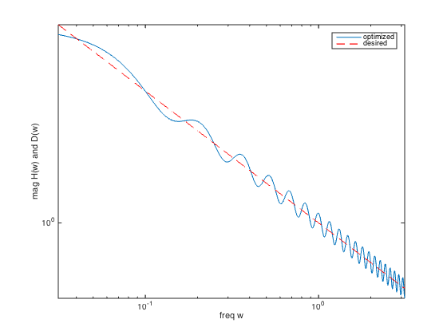

% "Filter design" lecture notes (EE364) by S. Boyd % "FIR filter design via spectral factorization and convex optimization" % by S.-P. Wu, S. Boyd, and L. Vandenberghe % (a figure is generated) % % Designs a log-Chebychev filter magnitude design given as: % % minimize max| log|H(w)| - log D(w) | for w in [0,pi] % % where variables are impulse response coefficients h, and data % is the desired frequency response magnitude D(w). % % We can express and solve the log-Chebychev problem above as % % minimize max( R(w)/D(w)^2, D(w)^2/R(w) ) % s.t. R(w) = |H(w)|^2 for w in [0,pi] % % where we now use the auto-correlation coeffients r as variables. % % As an example we consider the 1/sqrt(w) spectrum shaping filter % (the so-called pink-noise filter) where D(w) = 1/sqrt(w). % Here we use a logarithmically sampled freq range w = [0.01*pi,pi]. % % Written for CVX by Almir Mutapcic 02/02/06 % parameters n = 40; % filter order m = 15*n; % frequency discretization (rule-of-thumb) % log-space frequency specification wa = 0.01*pi; wb = pi; wl = logspace(log10(wa),log10(wb),m)'; % desired frequency response (pink-noise filter) D = 1./sqrt(wl); % matrix of cosines to compute the power spectrum Al = [ones(m,1) 2*cos(kron(wl,[1:n-1]))]; % solve the problem using cvx cvx_begin variable r(n,1) % auto-correlation coefficients variable R(m,1) % power spectrum % log-chebychev minimax design minimize( max( max( [R./(D.^2) (D.^2).*inv_pos(R)]' ) ) ) subject to % power spectrum constraint R == Al*r; cvx_end % check if problem was successfully solved disp(['Problem is ' cvx_status]) if ~strfind(cvx_status,'Solved') return end % spectral factorization h = spectral_fact(r); % figures figure(1) H = exp(-j*kron(wl,[0:n-1]))*h; loglog(wl,abs(H),wl,D,'r--') set(gca,'XLim',[wa pi]) xlabel('freq w') ylabel('mag H(w) and D(w)') legend('optimized','desired')
Calling SDPT3 4.0: 4200 variables, 1841 equality constraints For improved efficiency, SDPT3 is solving the dual problem. ------------------------------------------------------------ num. of constraints = 1841 dim. of sdp var = 1200, num. of sdp blk = 600 dim. of linear var = 1800 dim. of free var = 600 *** convert ublk to lblk ******************************************************************* SDPT3: Infeasible path-following algorithms ******************************************************************* version predcorr gam expon scale_data HKM 1 0.000 1 0 it pstep dstep pinfeas dinfeas gap prim-obj dual-obj cputime ------------------------------------------------------------------- 0|0.000|0.000|1.4e+04|1.9e+02|1.1e+07| 0.000000e+00 0.000000e+00| 0:0:00| spchol 1 1 1|0.908|0.977|1.3e+03|4.5e+00|3.5e+05|-6.779434e+02 -8.898649e+01| 0:0:00| spchol 1 1 2|0.933|0.963|8.7e+01|1.9e-01|2.1e+04|-3.493165e+01 -9.285894e+01| 0:0:00| spchol 1 1 3|0.986|0.997|1.2e+00|3.5e-03|3.8e+02|-1.025150e+00 -9.212412e+01| 0:0:00| spchol 2 2 4|0.966|0.471|4.1e-02|2.0e-03|6.4e+01|-3.813882e-01 -7.807639e+01| 0:0:00| spchol 2 2 5|0.490|0.167|2.1e-02|1.0e-02|6.4e+01|-3.414174e-01 -6.791929e+01| 0:0:01| spchol 2 2 6|0.657|0.889|7.4e-03|5.3e-03|1.2e+01|-5.162183e-01 -1.214292e+01| 0:0:01| spchol 2 2 7|1.000|0.914|9.2e-06|1.9e-03|1.5e+00|-8.557488e-01 -2.263174e+00| 0:0:01| spchol 2 2 8|1.000|0.714|5.3e-06|5.5e-04|5.6e-01|-9.800865e-01 -1.526533e+00| 0:0:01| spchol 2 2 9|1.000|0.172|3.1e-06|5.1e-04|4.7e-01|-1.022150e+00 -1.473351e+00| 0:0:01| spchol 2 2 10|1.000|0.481|1.1e-06|2.6e-04|2.9e-01|-1.063172e+00 -1.348412e+00| 0:0:01| spchol 2 2 11|1.000|0.327|2.7e-07|1.4e-04|1.9e-01|-1.111436e+00 -1.299974e+00| 0:0:01| spchol 2 2 12|1.000|0.900|2.5e-07|2.6e-05|6.4e-02|-1.140627e+00 -1.202063e+00| 0:0:01| spchol 2 2 13|0.768|0.913|8.3e-08|7.6e-06|3.4e-02|-1.160497e+00 -1.193737e+00| 0:0:01| spchol 2 2 14|1.000|0.945|9.3e-09|3.9e-06|1.1e-02|-1.178238e+00 -1.188675e+00| 0:0:02| spchol 2 2 15|0.951|0.840|5.3e-09|1.3e-06|2.1e-03|-1.185499e+00 -1.187516e+00| 0:0:02| spchol 2 2 16|0.822|0.854|2.3e-09|2.4e-07|5.2e-04|-1.186859e+00 -1.187373e+00| 0:0:02| spchol 2 2 17|0.929|0.894|6.4e-10|6.0e-08|5.9e-05|-1.187278e+00 -1.187336e+00| 0:0:02| spchol 2 2 18|0.979|0.969|5.3e-11|6.9e-09|2.8e-06|-1.187329e+00 -1.187331e+00| 0:0:02| spchol 3 3 19|0.993|0.988|7.0e-11|3.3e-10|4.9e-08|-1.187331e+00 -1.187331e+00| 0:0:02| stop: max(relative gap, infeasibilities) < 1.49e-08 ------------------------------------------------------------------- number of iterations = 19 primal objective value = -1.18733104e+00 dual objective value = -1.18733109e+00 gap := trace(XZ) = 4.87e-08 relative gap = 1.44e-08 actual relative gap = 1.43e-08 rel. primal infeas (scaled problem) = 6.98e-11 rel. dual " " " = 3.32e-10 rel. primal infeas (unscaled problem) = 0.00e+00 rel. dual " " " = 0.00e+00 norm(X), norm(y), norm(Z) = 1.2e+01, 2.2e+02, 2.7e+02 norm(A), norm(b), norm(C) = 5.0e+02, 2.0e+00, 3.6e+01 Total CPU time (secs) = 2.16 CPU time per iteration = 0.11 termination code = 0 DIMACS: 7.0e-11 0.0e+00 5.9e-09 0.0e+00 1.4e-08 1.4e-08 ------------------------------------------------------------------- ------------------------------------------------------------ Status: Solved Optimal value (cvx_optval): +1.18733 Problem is Solved
